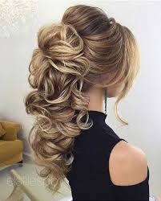

LOS MEJORES
PEINADOS PARA
PELO LARGO.
@Si quieres mas ideas visitanos o acude a nuestras fuentes de contacto.
COLETA
Con trenza
Comienza haciéndote una coleta alta. A continuación,
deberás realizar una trenza utilizando un mechón de la zona lateral y enrollarlo alrededor de la goma que
recoge el cabello de la coleta, ¡así de fácil!

SEMIRECOJIDO
Con ondas y sin ondas
Los semirecojidos los hacemos comunmente con la ayuda de pasadores, y en varias ocaciones de una plancha o rizadora

RECOJIDOS
Bonitos
Siempre es bueno tener opciones de recojidos... Pues muestran un look diferente

Si tines alguna peticion, sugerencia o duda !Contactanos!